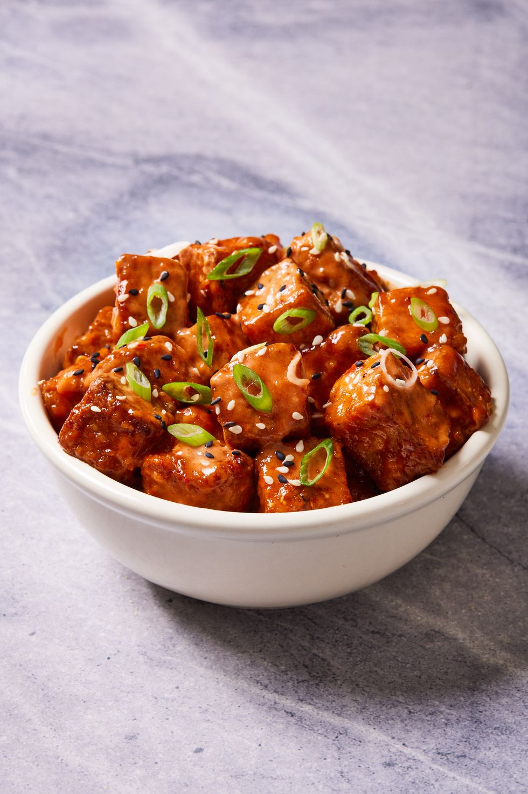

Fried Tofu

Tofu cooked in the air fryer.
Ingredients:
- 1/2 teaspoon onion powder
- 1/2 teaspoon garlic powder
- 1/2 teaspoon paprika
- 2 tablespoons soy sauce
- 2 teaspoons sesame oil
- 1 teaspoon salt
- 1/4 freshly ground black pepper
- 1/2 cup cornstarch
- 1 block firm tofu
- Cooking spray
- 1/4 cup mayonnaise
- 1/4 cup Thai sweet chili sauce
- 2 tablespoons sriracha
- 2 cloves garlic
Steps:
- Toss tofu cubes, onion powder, garlic powder, paprika, soy sauce, and sesame oil in a large bowl. Toss well, cover, and transfer to the fridge to marinate for 20 minutes to an hour.
- Preheat air fryer to 400ºF. In a medium bowl, whisk together cornstarch, salt and black pepper.
- Working in batches if necessary, toss tofu in the cornstarch mixture until thoroughly coated. Shake off excess cornstarch and add tofu in a single layer to the air fryer basket.
- Spray the cubes with a bit of cooking spray and air fry the tofu for 15 minutes, tossing half way through, until it is golden and crispy.
- Prepare the sauce: While the tofu cooks, in a large bowl, whisk together mayo, chili sauce, sriracha, and grated garlic. Season to taste with salt and set aside.
- When all the tofu is cooked, add the tofu and toss in the sauce. Serve over white rice, and garnish with scallions and sesame seeds.